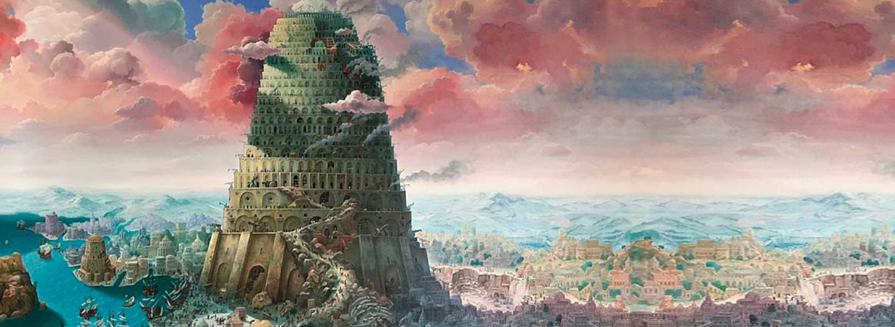

The Tower of Babel: Pride and Dispersion (Genesis 11)
"Come, let us build ourselves a city and a tower with its top in the heavens..." (Genesis 11:4)
After the flood, humanity begins to repopulate the earth. But instead of spreading out as God commanded, they settle together and pursue a monument to their own greatness. The Tower of Babel becomes a symbol of pride, self-sufficiency, and rebellion against divine purpose.

Scriptural Dispersion Paths (Genesis 10)
Following Babel, God scatters the descendants of Noah across the earth. Genesis 10 outlines three major family lines and their regions:
Japheth's descendants settled in the coastlands and regions north and west of Mesopotamia. This includes areas later associated with the Greeks, Scythians, and Indo-European peoples.
- Gomer, Magog, Madai, Javan, Tubal, Meshech, Tiras
- Reference: Genesis 10:2-5
Ham's line includes powerful early civilizations such as Egypt (Mizraim), Cush (Nubia), and Canaan. These regions play major roles in later biblical history.
- Cush, Mizraim, Put, Canaan
- Reference: Genesis 10:6-20
Shem's descendants remained closer to Babel and formed the line of Eber, from whom Abraham descends. This line preserves the promise and leads to the covenant people.
- Elam, Asshur, Arpachshad, Lud, Aram
- Reference: Genesis 10:21-31
Relevance to Salvation
- God's judgment leads to global diversity and cultural richness.
- The scattering sets the stage for God's covenant with Abraham.
- From dispersion comes the call to gather all nations in Christ.
"From one man He made every nation of mankind to live on all the face of the earth..." (Acts 17:26)